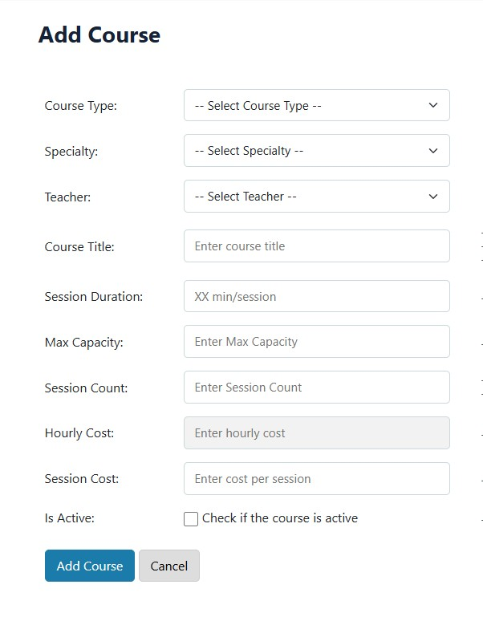
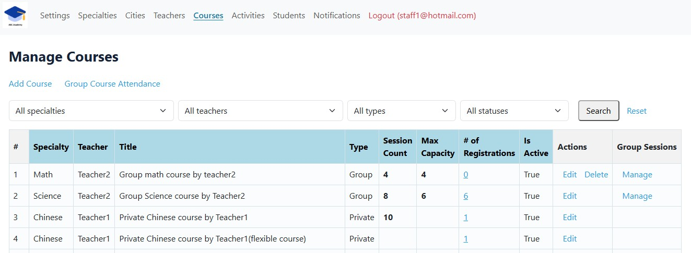
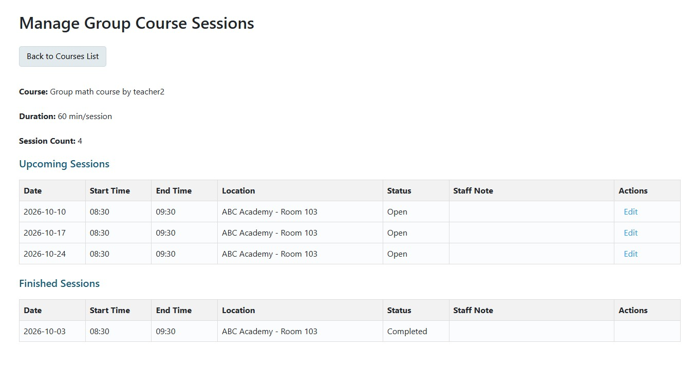

Manage Private and Group Courses in One Place
Build your courses around the way your tutoring business actually teaches.
Every tutoring business works a little differently.
Some focus on one-on-one lessons. Others run group programs. Many offer both.
As your business grows, keeping courses organized across different teachers, subjects, students, and sessions can become increasingly complicated.
ClassLift gives you one place to create and manage your courses — so your course structure can fit the way you actually teach.
Create Courses That Fit Your Teaching Model
Not every course needs to look the same.
With ClassLift, you can create different types of courses and define the structure that works for each program.
Set up the teacher, subject, session duration, capacity, and other course details based on how you want to deliver the course.

Whether you are offering private tutoring or running a group program, you can manage different course models within the same system.
Manage Private and Group Courses Together
As your tutoring business grows, so does your course catalog.
ClassLift gives you a central view of your courses across different teachers, subjects, and course types.

Quickly see how your courses are structured, who teaches them, and how students are participating.
And when your course list gets longer, filtering makes it easier to find exactly what you need.
Keep Group Course Sessions Organized
Group courses bring another layer of coordination.
You are not only managing the course itself — you are also managing a shared learning schedule for multiple students.
ClassLift helps you keep upcoming and completed group sessions connected to the course.

That gives you a clearer view of where the course is today, what is coming next, and what has already been completed.
Your Course Is Where Everything Starts
Course management is the starting point for everything that follows in ClassLift.
Once your courses are ready, you can register students, schedule lessons, and keep teaching activity connected as your business grows.
Create the course → Register students → Run the lessons.
Instead of managing each part separately, ClassLift helps keep the whole teaching workflow connected.
Build Your Courses. Keep Everything Connected.
Whether you offer private lessons, group programs, or a mix of both, ClassLift gives you a simpler way to keep your courses organized.
Create your courses. Connect your teachers and students. Keep everything moving from there.
Ready to simplify course management?